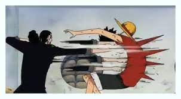

지건!! 흡..! '텟카이'
- 메인페이지
- 지건의 뜻
- 지건 쓰는법
- 지건을 막는 기술
지건의 뜻
지건은 전신의 힘을 집중해서 단단해진 손가락으로 표적을 찌르는 기술이다. 탄환과 다름없는 위력으로 손쉽게 사람의 몸을 꿰뚫는다.[27]
수련 중에는 지건에 실패해서 손가락을 삐기도 한다.[28] 사이퍼 폴 지망생들도 학교에서 연습하다 다치기도 한다 기본적으로 근거리 기술이지만 고도의 사용자라면 '손가락 튕기기'로 원거리에서 '날아다니는 지건'을 날릴 수 있다. 로브 루치와 스튜시가 사용했다. 람각과 마찬가지로 파생기술이 많은 편에 속한다. 람각과 마찬가지로 숙달되면 굳이 손가락으로 쓸 필요는 없는지 후쿠로는 주먹으로, 쿠마도리는 가지고 있는 석장이나 생명귀환으로 조종하는 머리카락으로, 카쿠는 아예 인수형 상태에서 코로 쓰기까지 한다(비건). 참고로 이걸로 똥침을 날리면 상대는 죽는다.[29] 여담으로 어느 독자가 "CP9은 지건에 실패해서 손가락 삔 적 있나요? 전 있습니다."라고 엽서를 보내자 작가가 말하길 "제발 따라하지 마세요. 여러분. 학부모님께 야단 맞는 건 나니깐!"[30] 무장색을 몰빵하면 단위면적당 위력을 집중시키며 내구성 문제도 해결이 된다.
따라하는 것 자체는 손가락으로 찌르기만 하면 되는 것이라서 굉장히 쉬운지라, 학창 시절에 소위 찐따들을 상대로 일진들이 연습한다는 우스갯소리에서 착안하여 상대가 짜증나게 굴거나 열받게 하는 상황이 왔을때 '지건 마렵다' 라는 드립이 자주 나온다.[31] 이 드립이 묘하게 입에 착착 붙다보니 원피스를 잘 모르는 사람에게도 이 말이 퍼지면서 지권, 쥐권, 직원 등으로 잘못 알고 있는 사람도 생기고 있다.
지건을 당하면 이렇게 됩니다...

또 발견한다고?